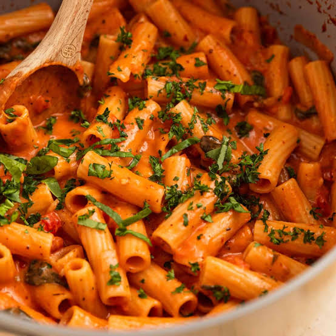
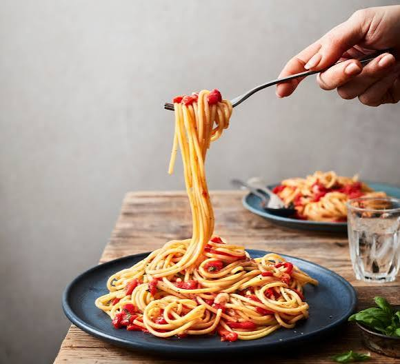
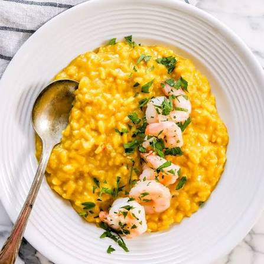
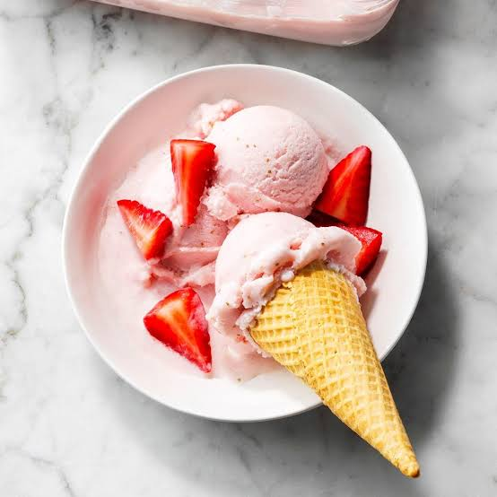

Popular Italian Foods
Italian cuisine has many famous dishes that are enjoyed both in Italy and around the world. Many traditional Italian foods use simple ingredients while creating strong and delicious flavours.
Pasta, pizza, lasagne, risotto and gelato are some of the best-known examples. Different regions of Italy also have their own special dishes and cooking traditions.


Pizza
Pizza is one of the most famous Italian foods. Traditional Italian pizza often uses a thin base with ingredients such as tomato, mozzarella, basil and olive oil.
Pizza started in Italy and has since become popular around the world. Different countries have created their own toppings and styles while keeping the basic idea of pizza.


Pasta
Pasta is another important part of Italian cuisine. There are many different shapes and types of pasta, including spaghetti, penne, ravioli and lasagne.
Pasta can be served with many different sauces and ingredients. Tomato sauce, cheese, vegetables, seafood and meat are commonly used in different pasta dishes.


Risotto
Risotto is a creamy rice dish that is especially associated with Northern Italy. It is slowly cooked with stock to create a smooth and creamy texture.
Different ingredients can be added to risotto, including mushrooms, vegetables, seafood and cheese. The ingredients often depend on the region and the recipe being used.

Gelato
Gelato is a popular Italian frozen dessert. It is similar to ice cream but is traditionally made with a different balance of ingredients and has a smooth, dense texture.
Gelato comes in many flavours, including chocolate, pistachio, strawberry and vanilla. It is enjoyed by people in Italy and many other countries.
